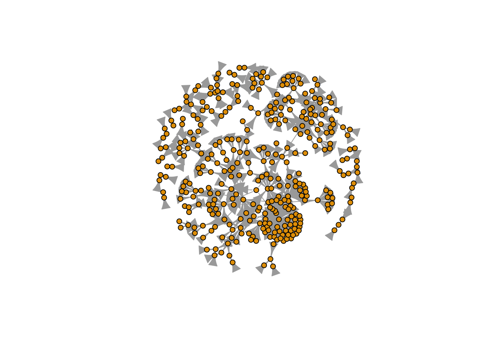

library(readr)
library(igraph)
Attaching package: 'igraph'The following objects are masked from 'package:stats':
decompose, spectrumThe following object is masked from 'package:base':
unionlibrary(readr)
library(igraph)
Attaching package: 'igraph'The following objects are masked from 'package:stats':
decompose, spectrumThe following object is masked from 'package:base':
unionedges <- read_csv("network/edges.csv")Rows: 402 Columns: 2
── Column specification ────────────────────────────────────────────────────────
Delimiter: ","
dbl (2): # source, target
ℹ Use `spec()` to retrieve the full column specification for this data.
ℹ Specify the column types or set `show_col_types = FALSE` to quiet this message.nodes <- read_csv("network/nodes.csv")Rows: 351 Columns: 3
── Column specification ────────────────────────────────────────────────────────
Delimiter: ","
chr (2): name, _pos
dbl (1): # index
ℹ Use `spec()` to retrieve the full column specification for this data.
ℹ Specify the column types or set `show_col_types = FALSE` to quiet this message.g <- graph_from_data_frame(d = edges, vertices = nodes, directed = TRUE)gIGRAPH 3ab1eea DN-- 351 402 --
+ attr: name (v/c), _pos (v/c)
+ edges from 3ab1eea (vertex names):
[1] N1 ->E23 N1 ->E33 N1 ->E41 N1 ->E42 N1 ->E44 N2 ->E23 N2 ->E33 N3 ->E6
[9] N3 ->E9 N3 ->E10 N3 ->E14 N3 ->E19 N3 ->E25 N3 ->E28 N3 ->E31 N3 ->E32
[17] N4 ->E1 N4 ->E30 N4 ->E34 N5 ->E1 N5 ->E2 N5 ->E4 N5 ->E8 N6 ->E8
[25] N6 ->E9 N6 ->E10 N6 ->E11 N7 ->E4 N7 ->E8 N8 ->E8 N9 ->E4 N9 ->E12
[33] N9 ->E30 N9 ->E39 N10->E26 N10->E32 N10->E41 N10->E42 N10->E43 N10->E65
[41] N10->E79 N11->E3 N12->E3 N13->E32 N13->E35 N13->E67 N14->E3 N15->E3
[49] N16->E3 N17->E6 N18->E27 N18->E35 N19->E6 N19->E9 N19->E12 N19->E25
[57] N19->E29 N19->E32 N20->E6 N21->E30 N22->E27 N23->E27 N23->E30 N23->E35
+ ... omitted several edgessummary(g)IGRAPH 3ab1eea DN-- 351 402 --
+ attr: name (v/c), _pos (v/c)V(g)$name [1] "E1" "E2" "E3" "E4" "E5" "E6" "E7" "E8" "E9" "E10"
[11] "E11" "E12" "E13" "E14" "E15" "E16" "E17" "E18" "E19" "E20"
[21] "E21" "E22" "E23" "E24" "E25" "E26" "E27" "E28" "E29" "E30"
[31] "E31" "E32" "E33" "E34" "E35" "E36" "E37" "E38" "E39" "E40"
[41] "E41" "E42" "E43" "E44" "E45" "E46" "E47" "E48" "E49" "E50"
[51] "E51" "E52" "E53" "E54" "E55" "E56" "E57" "E58" "E59" "E60"
[61] "E61" "E62" "E63" "E64" "E65" "E66" "E67" "E68" "E69" "E70"
[71] "E71" "E72" "E73" "E74" "E75" "E76" "E77" "E78" "E79" "E80"
[81] "E81" "E82" "E83" "E84" "E85" "E86" "E87" "E88" "E89" "E90"
[91] "E91" "E92" "E93" "E94" "E95" "E96" "E97" "E98" "E99" "E100"
[101] "E101" "E102" "E103" "E104" "E105" "N1" "N2" "N3" "N4" "N5"
[111] "N6" "N7" "N8" "N9" "N10" "N11" "N12" "N13" "N14" "N15"
[121] "N16" "N17" "N18" "N19" "N20" "N21" "N22" "N23" "N24" "N25"
[131] "N26" "N27" "N28" "N29" "N30" "N31" "N32" "N33" "N34" "N35"
[141] "N36" "N37" "N38" "N39" "N40" "N41" "N42" "N43" "N44" "N45"
[151] "N46" "N47" "N48" "N49" "N50" "N51" "N52" "N53" "N54" "N55"
[161] "N56" "N57" "N58" "N59" "N60" "N61" "N62" "N63" "N64" "N65"
[171] "N66" "N67" "N68" "N69" "N70" "N71" "N72" "N73" "N74" "N75"
[181] "N76" "N77" "N78" "N79" "N80" "N81" "N82" "N83" "N84" "N85"
[191] "N86" "N87" "N88" "N89" "N90" "N91" "N92" "N93" "N94" "N95"
[201] "N96" "N97" "N98" "N99" "N100" "N101" "N102" "N103" "N104" "N105"
[211] "N106" "N107" "N108" "N109" "N110" "N111" "N112" "N113" "N114" "N115"
[221] "N116" "N117" "N118" "N119" "N120" "N121" "N122" "N123" "N124" "N125"
[231] "N126" "N127" "N128" "N129" "N130" "N131" "N132" "N133" "N134" "N135"
[241] "N136" "N137" "N138" "N139" "N140" "N141" "N142" "N143" "N144" "N145"
[251] "N146" "N147" "N148" "N149" "N150" "N151" "N152" "N153" "N154" "N155"
[261] "N156" "N157" "N158" "N159" "N160" "N161" "N162" "N163" "N164" "N165"
[271] "N166" "N167" "N168" "N169" "N170" "N171" "N172" "N173" "N174" "N175"
[281] "N176" "N177" "N178" "N179" "N180" "N181" "N182" "N183" "N184" "N185"
[291] "N186" "N187" "N188" "N189" "N190" "N191" "N192" "N193" "N194" "N195"
[301] "N196" "N197" "N198" "N199" "N200" "N201" "N202" "N203" "N204" "N205"
[311] "N206" "N207" "N208" "N209" "N210" "N211" "N212" "N213" "N214" "N215"
[321] "N216" "N217" "N218" "N219" "N220" "N221" "N222" "N223" "N224" "N225"
[331] "N226" "N227" "N228" "N229" "N230" "N231" "N232" "N233" "N234" "N235"
[341] "N236" "N237" "N238" "N239" "N240" "N241" "N242" "N243" "N244" "N245"
[351] "N246"E(g)$weight NULLplot(g, vertex.size=5, vertex.label=NA)
head(V(g)$name) [1] "E1" "E2" "E3" "E4" "E5" "E6"head(E(g)) + 6/402 edges from 3ab1eea (vertex names):
[1] N1->E23 N1->E33 N1->E41 N1->E42 N1->E44 N2->E23